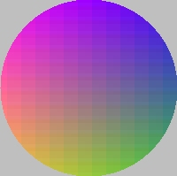

| << Animacja Spis Strona g³ówna Utrata powierzchni >> |
Do tej pory korzystaj¹c z DirectDraw g³ównie blitowaliœmy na ekran gotowe bitmapy. Jeœli chcieliœmy narysowaæ coœ "rêcznie" b¹dŸ wypisaæ jakiœ tekst, musieliœmy siê uciekaæ do takiej sztuczki: pobieraliœmy uchwyt kontekstu powierzchni i wykorzystywaliœmy funkcje WinAPI do rysowania po niej. Takie rozwi¹zanie mia³o dwie powa¿ne wady: by³o arcyniewygodne (te wszelkie pêdzle, pióra, pobieranie i zwalnianie zasobów... brrr) oraz zbyt powolne.
Nasuwa siê zatem pytanie: czy nie mo¿na by po prostu dostaæ dostêp do miejsca, gdzie przechowywane s¹ "surowe" dane o pikselach? To niew¹tpliwie by³aby najszybsza metoda rysowania po powierzchni, a zarazem niezbyt skomplikowana, co doskonale wiedz¹ ludzie, zaczynaj¹cy sw¹ programistyczn¹ karierê jeszcze pod DOS-em, gdzie o ¿adnych uchwytach, kontekstach, pêdzlach i innych g³upotach nie by³o mowy. OdpowiedŸ na pytanie brzmi: tak!
Naszym zadaniem bêdzie narysowanie kó³eczka, w którym barwy bêd¹ p³ynnie przechodziæ miêdzy ró¿nymi wartoœciami. Robliœmy ju¿ coœ takiego w kursie WinAPI. Metoda, która zwraca nam wskaŸnik do pikseli danej powierzchni, nazywa siê Lock. W najprostszej mo¿liwej postaci jej wywo³anie wymaga podania adresu struktury typu DDSURFACEDESC, któr¹ to strukturê funkcja Lock wype³ni niezbêdnymi (i nie tylko ;-)) danymi. Strukturê tê musimy najpierw odpowiednio przygotowaæ, tj. wyzerowaæ jej pola oraz wpisaæ rozmiar struktury do pola dwSize. Oczywiœcie pomijam takie pierdo³ki, jak tworzenie g³ównego obiektu DD oraz powierzchni, gdy¿ to wszystko masz ju¿ w ma³ym palcu (prawda? ;-)). Zaczynamy:
|
DDSURFACEDESC ddsd; ZeroMemory(&ddsd, sizeof(DDSURFACEDESC)); ddsd.dwSize = sizeof(DDSURFACEDESC); |
Teraz mo¿emy ju¿ zablokowaæ nasz¹ powierzchniê funkcj¹ Lock. S³owo "zablokowaæ" nie jest bynajmniej przypadkowe; od momentu kiedy to zrobimy, a¿ do wywo³ania funkcji Unlock (która, jak siê domyœlamy, odblokowuje powierzchniê) na powierzchni ¿aden inny proces nie mo¿e nic narysowaæ. Wyjaœnienia wymaga³aby jeszcze mo¿e flaga DDLOCK_WAIT, któr¹ podajemy jako trzeci argument; oznacza ona, ¿e w razie gdyby w momencie wywo³ania Lock powierzchnia by³a czymœ zajêta (np. blitowaniem grafiki), to funkcja Lock ma zaczekaæ, a¿ powierzchnia zakoñczy swoj¹ poprzedni¹ "misjê". W przeciwnym wypadku Lock natychmiast zwróci kod b³êdu.
|
HRESULT ret = lpPowierznia->Lock(NULL, &ddsd, DDLOCK_WAIT, NULL); if(ret != DD_OK) return FALSE; |
Gotowe, powierzchnia zablokowana (chyba, ¿e funkcja Lock zwróci³a nam coœ innego, ni¿ DD_OK, co staæ siê nie powinno). Gdzie zatem nasz wskaŸnik do pikseli? Jest on ukryty w strukturze ddsd, jak nietrudno siê domyœliæ. Nazwa jego kryjówki to lpSurface. Niestety, wskaŸnik ten wskazuje na tablicê jednowymiarow¹, a co za tym idzie - bêdziemy musieli zastosowaæ pewn¹ formu³ê matematyczn¹ (na szczêœcie niezbyt skomplikowan¹), aby dostaæ siê do konkretnego piksela. Chodzi mianowicie o odwzorowanie przestrzeni dwuwymiarowej (jak¹ jest ekran oraz wszelkie powierzchnie pozaekranowe) na jednowymiarow¹ (tablica z danymi pikseli). Jeœli chcemy dobraæ siê do piksela o wspó³rzêdnych (x,y), nale¿y pomno¿yæ wartoœæ dwWidth (liczba pikseli w ka¿dej linii, czyli szerokoœæ linii) przez numer linii (y) i dodaæ numer kolumny (x). Tak wiêc instrukcja, ustawiaj¹ca piksel o takich wspó³rzêdnych na kolor wygl¹daæ mo¿e jakoœ tak:
|
((DWORD*)ddsd.lpSurface)[ddsd.dwWidth * y + x] = k; |
WskaŸnik lpSurface jest typu void*, tak wiêc przed u¿yciem musimy go przekonwertowaæ. Jeœli za³o¿ymy, ¿e operujemy na kolorze 32-bitowym, to powinniœmy przekonwertowaæ ten wskaŸnik na wskaŸnik do wartoœci 32-bitowej w³aœnie, czyli DWORD*. Maj¹c gotowy wskaŸnik, dysponujemy zarazem tablic¹ - tego chyba ju¿ nie muszê t³umaczyæ. Teraz pozostaje tylko zastosowaæ omówiony wy¿ej wzór i ju¿ mo¿emy rysowaæ nasze kolorowe kó³ko:
|
const WORD sx = 100; // œrodek ko³a - wsp. x const WORD sy = 100; // œrodek ko³a - wsp. y const WORD r = 100; // promieñ ko³a for(WORD y=0; y<200; ++y) for(WORD x=0; x<200; ++x) if( (x-sx)*(x-sx)+(y-sy)*(y-sy) <= r*r ) ((DWORD*)ddsd.lpSurface)[ddsd.dwWidth * y + x] = Kolor32(255-x, y, 255-y); |
Do "zmontowania" odpowiedniej wartoœci koloru u¿yliœmy sobie funkcji Kolor32 (lub Kolor16 dla trybu 16-bitowego). Funkcjê tê omówiliœmy sobie w miarê dok³adnie w poprzedniej czêœci kursu DirectDraw, wiêc nie bêdziemy siê powtarzaæ.
Jak ju¿ wspomnia³em, nasza powierzchnia jest teraz zablokowana i nale¿y u¿yæ Unlock, ¿eby znów przywróciæ j¹ do "normalnoœci":
|
lpPowierzchnia->Unlock(NULL); |
Pozosta³o nam tylko wrzucenie wyniku na ekran (o ile do tej pory rysowaliœmy na powierzchni pozaekranowej, bo równie dobrze moglibyœmy rysowaæ od razu po g³ównej powierzchni ekranu). Tak te¿ czynimy:
| lpEkran->BltFast(100,100,lpPowierzchnia,NULL, DDBLTFAST_WAIT|DDBLTFAST_NOCOLORKEY); |
Oczywiœcie jeœli stworzy³eœ sobie ³añcuch powierzchni, to zamiast blitowaæ, mo¿esz równie¿ przerzuciæ bufory funkcj¹ Flip. Jeœli niczego nie skaszani³eœ po drodze, otrzymujesz takie cuœ:

| << Animacja Spis Strona g³ówna Utrata powierzchni >> |